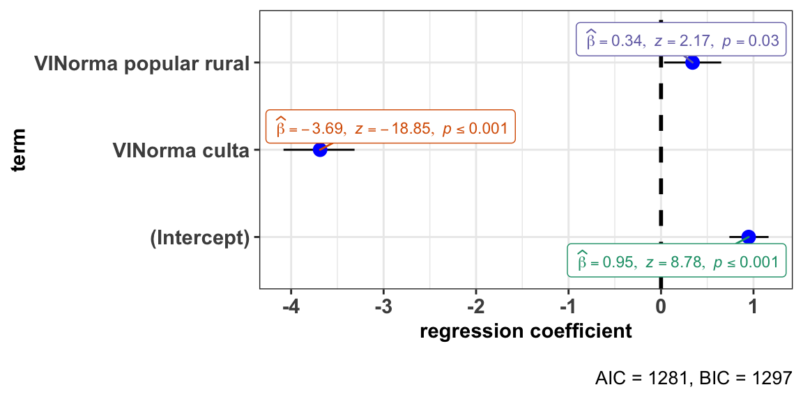
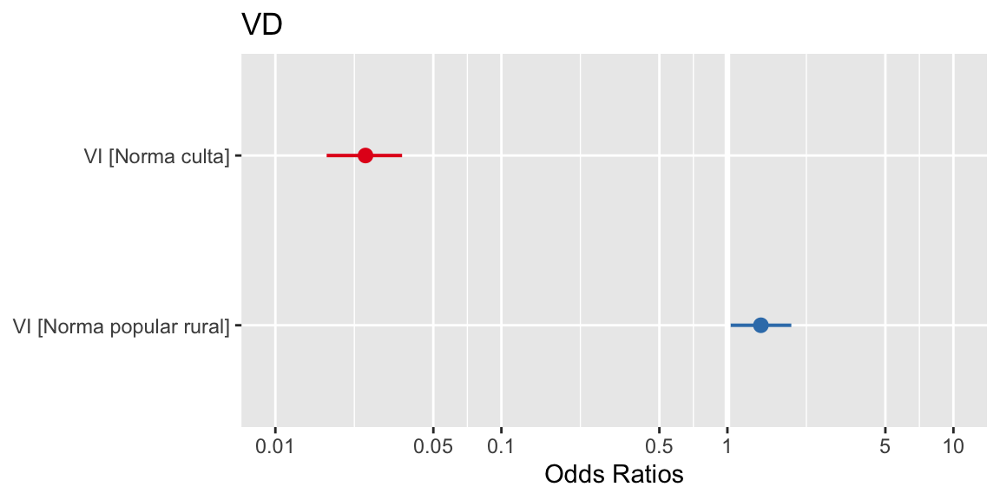
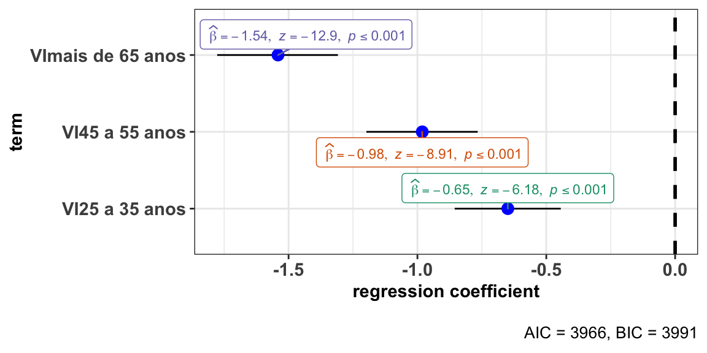
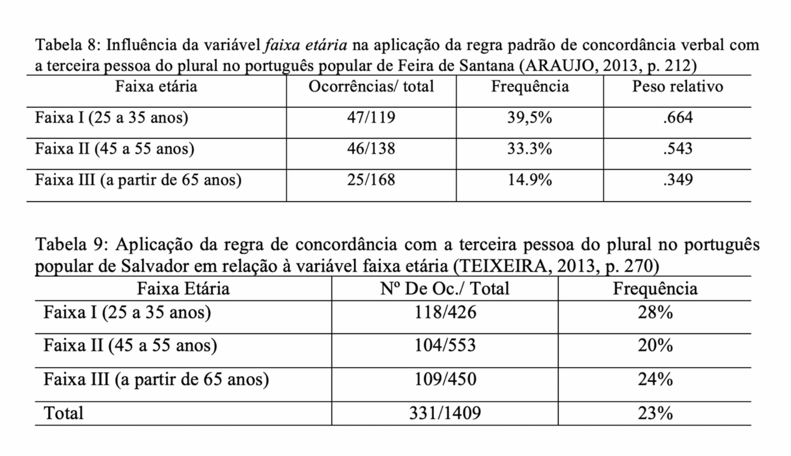
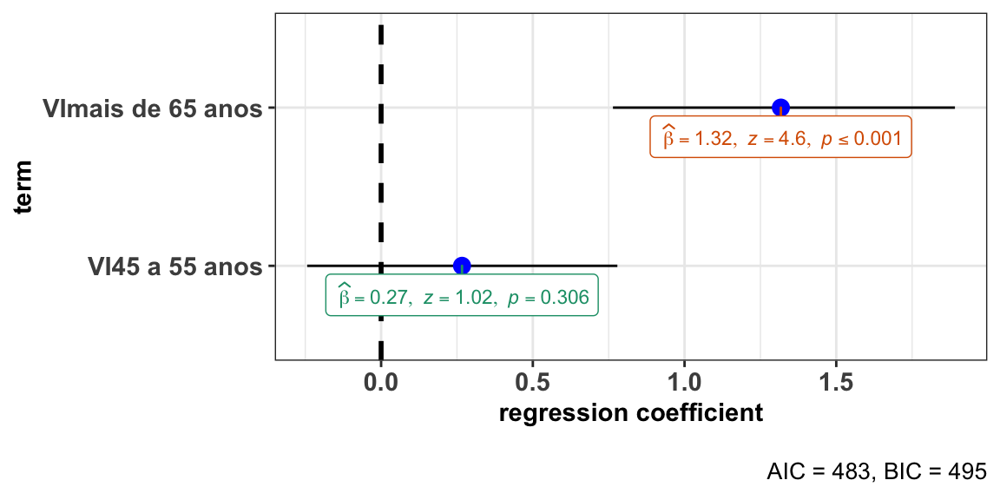
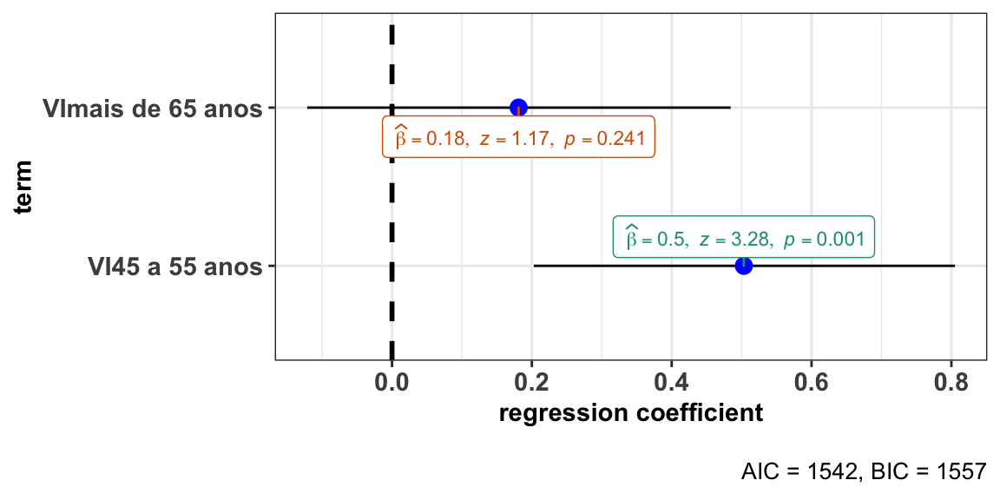
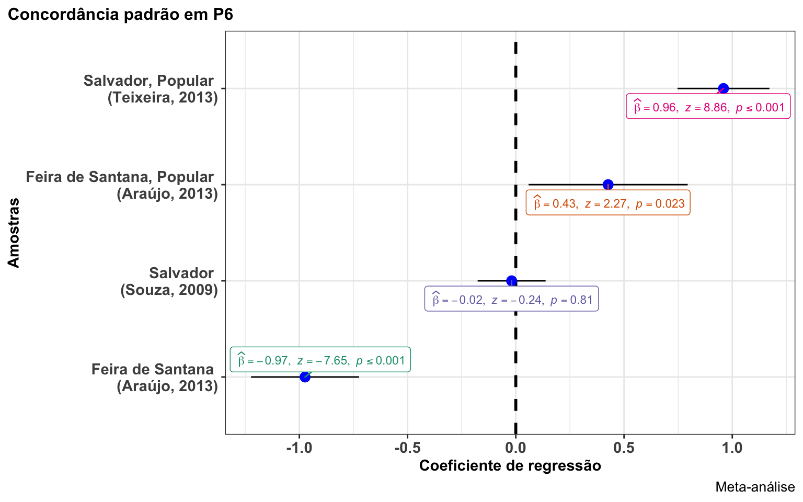

Como fazer meta-análise com dados socioliguísticos?
Replicabilidade na ciência
A ciência vive uma crise generalizada em função da baixa replicabilidade de resultados ou de estudos. Há várias causas para essa crise, uma delas é a falta de clareza de procedimentos de análise dos dados, Como consequência, o poder explanatório das análises e da generalização dos resultados são limitados.
A não explicitação de todos os procedimentos realizados na análise e estatísticas reportadas parcialmente ou apenas quando conveniente são problemas recorrentes nos estudos, o que tornam uma meta-análise muito difícil de ser realizada.
A meta-análise é um procedimento em que são reunidos resultados de estudos com diferentes conjuntos de dado sobre determinado fenômeno e são aplicadas técnicas estatísticas para explicar a variância dos resultados a partir de fatores comuns aos estudos.
Uma vantagem em um estudo de meta-análise é eliminar viéses da revisão da literatura narrativa, em que são reportados resultados de estudo independentemente. Ao integrar as análises, o poder explanatório aumenta.
Vamos explorar neste tutorial algumas estratégias para produzir uma meta-análise, considerando um cenário em que estudos são independentes e com resultados estatísticos reportados apenas parcialmente.
Concordância verbal
A concordância verbal no português brasileiro é um fenômeno amplamente estudado, que tem apresentado resultados convergentes em relação aos condicionamentos internos (saliência fônica, posição), mas diversificados social e dialetalmente. A diversidade tem sido explicada como resultado das diferentes sócio-histórias do português brasileiro. Mas também decorre das diferentes tipologizações dos condicionamentos e por viéses de amostragem.
Vamos examinar os resultados reportados em uma primeira versão de um texto, em que é apresentada uma revisão narrativa da concordância verbal em duas comunidades de fala da Bahia, e aprender a realizar uma meta-análise dos estudos, objeto da segunda versão do texto (em preparação).

A tabela 2 apresenta a contagem das ocorrências do fenômeno em função do tipo de subamostra. A variável dependente é a realização da concordância, uma variável categórica nominal, e os resultados estão apresentados apenas em função do valor escolhido como default, no caso, a realização padrão. A variável independente é o tipo de amostra, com três níveis, “norma popular rural”, “norma popular urbana” e “norma culta”.
Os percentuais não nos permitem inferências. Um teste inferencial que pode ser realizado é o teste de qui-quadrado, que tem por objetivo verificar se a frequência absoluta observada de uma variável é significativamente diferente da distribuição de frequência absoluta esperada.
Um teste simples que pode ser realizado sem muita dificuldade é o teste aproximado para independência entre as proporções:
aplicacao = c(97, 119, 619)
total = c(449, 436, 659)
prop.test(aplicacao, total, correct = TRUE)
#>
#> 3-sample test for equality of proportions without continuity
#> correction
#>
#> data: aplicacao out of total
#> X-squared = 738.08, df = 2, p-value < 2.2e-16
#> alternative hypothesis: two.sided
#> sample estimates:
#> prop 1 prop 2 prop 3
#> 0.2160356 0.2729358 0.9393020Se os valores foram digitados corretamente, as proporções apresentadas devem corresponder aos percentuais da tabela. O teste sugere que a distribuição entre as proporções é diferente da hipótese nula (p > 0.001).
Como fazer um teste de qui-quadrado a partir de uma tabela?
- Informar as variáveis em dois vetores:
- Um vetor será nomeado de
VDe listará os níveis da variável dependente; - O outro de
VIe listará os níveis da variável independente
- Um vetor será nomeado de
- Listar as contagens de cada nível da variável independente, seguindo a ordem da variável dependente em vetores em uma matriz
data.matrixque serão unidos pela funçãorbindno objetodadosP6. - Vincular os nomes das variáveis:
- Variável dependente =
colnames - Variável independente =
rownames
- Variável dependente =
VD <- c("concordância", "não concordância")
VI <- c("Norma popular rural", "Norma popular urbana", "Norma culta")
dadosP6 <- data.matrix(rbind(
c(97, 352),
c(119, 307),
c(619, 40)
))
rownames(dadosP6) <- VI
colnames(dadosP6) <- VDSe todos os procedimentos estiverem corretos, você terá um objeto:
dadosP6
#> concordância não concordância
#> Norma popular rural 97 352
#> Norma popular urbana 119 307
#> Norma culta 619 40Vamos inspecionar visualmente este objeto, construindo um gráfico de barras:
dadosP6.t = t(dadosP6) ### Transpor a matriz (colunas em linhas e linhas em colunas)
barplot(dadosP6.t,
beside = TRUE, ### Barras lado a lado
legend = TRUE,
main = "Frequências da concordância em P6 \n em função do tipo de amostra",
ylim = c(0, 700), ### Ajustar o eixo y para o máximo de ocorrências
cex.names = 0.8, ### Tamanho do texto das colunas
cex.axis = 0.8, ### tamanho do texto dos eixos
args.legend = list(x = "topleft", ### Posição da legenda
cex = 0.8, ### Tamanho do texto da legenda
bty = "n"))
Podemos ver que há uma diferença de distribuição entre os níveis da variável independente.Para confirmar se esta distribuição observada é signficativamente diferente da esperada, realizamos o teste de qui-quadrado:
chisq.test(dadosP6)
#>
#> Pearson's Chi-squared test
#>
#> data: dadosP6
#> X-squared = 730.18, df = 2, p-value < 2.2e-16O efeito da dependência é estatisticamente significativo. Podemos descobrir o quanto cada nível contribui para essa associação. Para isso, precisamos investigar os resíduos, ou seja, a diferença entre a frequência observada e a frequência esperada em cada célula.
resultadoP6 <- chisq.test(dadosP6)
round(resultadoP6$residuals, 3)
#> concordância não concordância
#> Norma popular rural -9.429 10.305
#> Norma popular urbana -7.413 8.102
#> Norma culta 13.743 -15.021O sinal dos resíduos é importante para interpretar a associação entre as linhas e as colunas, ou entre a variável dependente e independente. Podemos visualizar melhor os resíduos por meio de uma matriz de correlação, com o pacote corrplot:
Podemos visualizar melhor os resíduos por meio de uma matriz de correlação, com o pacote corrplot:
library(corrplot)
#> corrplot 0.84 loaded
corrplot(resultadoP6$residuals, is.cor = FALSE)Nesta matriz de correlação, ou correlograma, o tamanho do círculo é proporcional à contribuição da célula para o efeito.
- Resíduos positivos estão em azul e sinalizam uma associação positiva entre linha e coluna.
- Resíduos negativos estão em vermelho e sinalizam uma associação negativa entre linha e coluna.
Podemos calcular o quanto cada célula contribui para o total do escore de qui-quadrado e dispor no correlograma:
contrib <- 100*resultadoP6$residuals^2/resultadoP6$statistic
round(contrib, 3)
#> concordância não concordância
#> Norma popular rural 12.175 14.544
#> Norma popular urbana 7.526 8.990
#> Norma culta 25.866 30.899
corrplot(contrib, is.cor = FALSE)O nível “norma culta”’ é o que mais contribui para o resultado do teste.
Como fazer um teste de regressão a partir de uma tabela?
Primeiro, precisamos desfazer a tabela, retornando as ocorrências, para poder realizar uma análise de regressão. O preparo dos dados requer a conversão em um objeto data.frame.table e depois utilizar uma função que transforma as contagens em ocorrências counsToCases.
dados <- as.data.frame.table(dadosP6) ### converter a matriz em um data.frame
countsToCases <- function(x, countcol = "Freq") { ###converter as contagens em ocorrências
idx <- rep.int(seq_len(nrow(x)), x[[countcol]])
x[[countcol]] <- NULL
x[idx, ]
}
dados <- countsToCases(as.data.frame(dados))
names(dados) <- c("VI", "VD") ## renomeando as colunas
dados$VI <- factor(dados$VI, levels =c("Norma popular urbana", "Norma culta", "Norma popular rural")) ## reordenando os níveis
head(dados) ##observar as 6 primeiras linhas
#> VI VD
#> 1 Norma popular rural concordância
#> 1.1 Norma popular rural concordância
#> 1.2 Norma popular rural concordância
#> 1.3 Norma popular rural concordância
#> 1.4 Norma popular rural concordância
#> 1.5 Norma popular rural concordânciaAgora os dados estão distribuídos por ocorrências, e não mais por contagem. Podemos realizar um outro tipo de teste, uma regressão logística generalizada (retome o material das outras aulas).
Vamos construir um modelo de regressão considerando que variável dependente é categórica nominal binária (com concordância ou sem concordância, em termos binários, 1 ou 0) e a variável preditora é também categórica.
modP6 <- glm(VD ~ VI, data = dados, family = "binomial")
summary(modP6)
#>
#> Call:
#> glm(formula = VD ~ VI, family = "binomial", data = dados)
#>
#> Deviance Residuals:
#> Min 1Q Median 3Q Max
#> -1.7506 -0.3539 -0.3539 0.6977 2.3672
#>
#> Coefficients:
#> Estimate Std. Error z value Pr(>|z|)
#> (Intercept) 0.9477 0.1080 8.776 <2e-16 ***
#> VINorma culta -3.6870 0.1956 -18.845 <2e-16 ***
#> VINorma popular rural 0.3412 0.1575 2.166 0.0303 *
#> ---
#> Signif. codes: 0 '***' 0.001 '**' 0.01 '*' 0.05 '.' 0.1 ' ' 1
#>
#> (Dispersion parameter for binomial family taken to be 1)
#>
#> Null deviance: 2114.5 on 1533 degrees of freedom
#> Residual deviance: 1275.0 on 1531 degrees of freedom
#> AIC: 1281
#>
#> Number of Fisher Scoring iterations: 5Um resultado 2.2e-16 está em notação científica e significa 2.2 x 10_-16_, ou seja, 0.00000000000000022, 15 zeros antes do ponto decimal.
A interpretação dos resultados considera o fato de que as chances de realização da variável são concordância ou não concordância.
O log das chances é uma função dos coeficientes estimados: P(ocorrer)/P(ocorrer) = β0 + β1x1 + β2x2 + … + βnxn em que P significa probabilidade de (ocorrer/não ocorrer), β0 é o intercepto, ponto do eixo em que a curva toca, β1 é o coeficiente das variáveis preditoras.
A tabela de coeficientes nos mostra uma estimativa para cada coeficiente (β) para o modelo de regressão logística. O coeficiente de uma variável preditora categórica é a mudança estimada no log natural das chances com o nível de referência o nível de coeficiente. Por padrão, os níveis são ordenados pela ordem alfabética (a mudança na ordem dos níveis do fator pode ser feita).
Coeficientes positivos indicam que o evento torna-se mais provável e coeficientes negativos indicam que o evento torna-se menos provável.
No exemplo, o nível de referência do intercepto é a realização com concordância e norma urbana popular. Na mudança de nível, o coeficiente para a ocorrência de não concordância na norma culta aumenta o log natural das chances em - 3.687 em relação à norma popular urbana, enquanto para a norma popular rural aumenta em 0.3412 em relação à norma popular urbana.
O valor do coeficiente não é em probabilidades, mas sim em log das razões de chance (log-odds).
- Probabilidade: valor entre 0 e 1
- Razão de chances (odds): valor de 0 ao ∞
- Log de razão de chances (log-odds): de −∞ a ∞
Os resultados em log-odds permitem a comparação da magnitude dos coeficientes.
O que observar:
- A ordem dos níveis das variáveis na saída (se não houve mudança, a ordenação dos níveis segue a ordem alfabética;
- Os sinais dos coeficientes: se positivos ou negativos;
- A magnitude dos coeficientes: a diferença entre eles;
- O p-valor: a probabilidade que mede a evidência contrária à hipótese nula. P-valor baixo é uma forte evidência contra a hipótese nula.
Podemos visualizar os resultados do modelo em gráfico, utilizando o pacote ggstats.
library(ggstatsplot)
#> Registered S3 methods overwritten by 'broom.mixed':
#> method from
#> augment.lme broom
#> augment.merMod broom
#> glance.lme broom
#> glance.merMod broom
#> glance.stanreg broom
#> tidy.brmsfit broom
#> tidy.gamlss broom
#> tidy.lme broom
#> tidy.merMod broom
#> tidy.rjags broom
#> tidy.stanfit broom
#> tidy.stanreg broom
#> Registered S3 methods overwritten by 'car':
#> method from
#> influence.merMod lme4
#> cooks.distance.influence.merMod lme4
#> dfbeta.influence.merMod lme4
#> dfbetas.influence.merMod lme4
ggstatsplot::ggcoefstats(x = modP6, exclude.intercept = FALSE, output = "plot")
#> Can't calculate log-loss.
#> New names:
#> * NA -> ...1
#> * NA -> ...2
#> * NA -> ...3
#> * NA -> ...4 Nesta visualização, os resultados estão em log-odds (de −∞ a ∞).
Outra forma de visualização em gráfico pode ser produzida com o pacote sjPlot. Vejamos como ficam os resultados em razão de chances (odds):
library(sjPlot)
#> Install package "strengejacke" from GitHub (`devtools::install_github("strengejacke/strengejacke")`) to load all sj-packages at once!
plot_model(modP6) Embora “digam a mesma coisa”, os resultados em log-odds permitem observar a magnitude do efeito, daí por ser a forma preferível de reportar o resultado de um modelo de regressão generalizado.
Podemos também dispor os resultados em uma tabela formatável, com o pacote sjlabelled.
library(sjlabelled)
tab_model(modP6, transform = NULL, auto.label = FALSE)| VD | |||
|---|---|---|---|
| Predictors | Log-Odds | CI | p |
| (Intercept) | 0.95 | 0.74 – 1.16 | <0.001 |
| VINorma culta | -3.69 | -4.08 – -3.31 | <0.001 |
| VINorma popular rural | 0.34 | 0.03 – 0.65 | 0.030 |
| Observations | 1534 | ||
| R2 Tjur | 0.476 | ||
Como vimos, o teste do qui-quadrado, com a observação dos resíduos, apontou a contribuição do nível norma culta; o modelo de regressão construído explica de forma mais específica a atuação deste nível, estimando em log-odds a magnitude do efeito deste nível da variável independente na realização da variável dependente.
Os procedimentos para a análise univariada podem ser reproduzíveis mesmo sem se ter acesso ao conjunto de dados original. Este recurso pode auxiliar na produção de estudos de meta-análise, ao suprir resultados estatísticos nem sempre acessíveis e reportados nos estudos originais.
Como comparar estudos com conjuntos de dados distintos?
A direção do fenômento de variação na concordância verbal na terceira pessoa é a mesma em comunidades de fala distintas? Podemos responder a esta questão a partir de resultados apresentados em estudos anteriores, seguindo os procedimentos explicados anteriormente, e depois podemos proceder a uma meta-análise.
Concordância verbal na fala de Salvador e de Feira de Santana
Vamos realizar os procedimentos para comparar os resultados de Araujo (2013), concordância de terceira pessoa em função da idade em Feira de Santana, e de Souza (2011), concordância de terceira pessoa em função da idade em Salvador.

O teste aproximado para independência entre as proporções pode ser calculado:
prop.test(x = c(736, 2338), n = c(1082, 3368))
#>
#> 2-sample test for equality of proportions with continuity correction
#>
#> data: c(736, 2338) out of c(1082, 3368)
#> X-squared = 0.68309, df = 1, p-value = 0.4085
#> alternative hypothesis: two.sided
#> 95 percent confidence interval:
#> -0.04641901 0.01850159
#> sample estimates:
#> prop 1 prop 2
#> 0.6802218 0.6941805O resultado não considera o efeito dos níveis da variável independente faixa etária, que foi controlada de maneira diferente nos dois estudos. Precisamos realizar análises univariadas para cada conjunto de dados e depois reuni-los.
Começamos por Feira de Santana:
- Importar o conjunto de dados:
VD <- c("concordância", "não concordância")
VI <- c("25 a 35 anos", "45 a 55 anos", "mais de 65 anos")
dadosP6id <- data.matrix(rbind(
c(225, 85),
c(321,117),
c(190, 144)
))
rownames(dadosP6id) <- VI
colnames(dadosP6id) <- VD- Realizar teste de qui-quadrado e observar os resíduos:
resultadoP6id <- chisq.test(dadosP6id)
resultadoP6id
#>
#> Pearson's Chi-squared test
#>
#> data: dadosP6id
#> X-squared = 27.586, df = 2, p-value = 1.023e-06
corrplot(resultadoP6id$residuals, is.cor = FALSE)contrib <- 100*resultadoP6id$residuals^2/resultadoP6id$statistic
round(contrib, 3)
#> concordância não concordância
#> 25 a 35 anos 3.433 7.302
#> 45 a 55 anos 6.472 13.766
#> mais de 65 anos 22.073 46.953
corrplot(contrib, is.cor = FALSE)- Converter as contagens em ocorrências:
dados <- as.data.frame.table(dadosP6id)
dados <- countsToCases(as.data.frame(dados))
names(dados) <- c("VI", "VD")
head(dados)
#> VI VD
#> 1 25 a 35 anos concordância
#> 1.1 25 a 35 anos concordância
#> 1.2 25 a 35 anos concordância
#> 1.3 25 a 35 anos concordância
#> 1.4 25 a 35 anos concordância
#> 1.5 25 a 35 anos concordância- Construir o modelo de regressão:
modP6fs <- glm(VD ~ VI, data = dados, family = "binomial")
summary(modP6fs)
#>
#> Call:
#> glm(formula = VD ~ VI, family = "binomial", data = dados)
#>
#> Deviance Residuals:
#> Min 1Q Median 3Q Max
#> -1.0622 -0.8006 -0.7884 1.2972 1.6248
#>
#> Coefficients:
#> Estimate Std. Error z value Pr(>|z|)
#> (Intercept) -0.97345 0.12732 -7.646 2.07e-14 ***
#> VI45 a 55 anos -0.03582 0.16695 -0.215 0.83
#> VImais de 65 anos 0.69624 0.16857 4.130 3.62e-05 ***
#> ---
#> Signif. codes: 0 '***' 0.001 '**' 0.01 '*' 0.05 '.' 0.1 ' ' 1
#>
#> (Dispersion parameter for binomial family taken to be 1)
#>
#> Null deviance: 1356.2 on 1081 degrees of freedom
#> Residual deviance: 1329.3 on 1079 degrees of freedom
#> AIC: 1335.3
#>
#> Number of Fisher Scoring iterations: 4
ggstatsplot::ggcoefstats(x = modP6fs, output = "plot")
#> Can't calculate log-loss.
#> New names:
#> * NA -> ...1
#> * NA -> ...2
#> * NA -> ...3
#> * NA -> ...4Agora, vamos realizar os mesmos procedimentos para Salvador:
- Importar o conjunto de dados:
VD <- c("concordância", "não concordância")
VI <- c("15 a 24 anos", "25 a 35 anos", "45 a 55 anos", "mais de 65 anos")
dadosP6ssa <- data.matrix(rbind(
c(315, 309),
c(640,328),
c(650, 239),
c(733, 154)
))
rownames(dadosP6ssa) <- VI
colnames(dadosP6ssa) <- VD- Realizar teste de qui-quadrado e observar os resíduos:
resultadoP6ssa <- chisq.test(dadosP6ssa)
resultadoP6ssa
#>
#> Pearson's Chi-squared test
#>
#> data: dadosP6ssa
#> X-squared = 189.13, df = 3, p-value < 2.2e-16
corrplot(resultadoP6ssa$residuals, is.cor = FALSE)contrib <- 100*resultadoP6ssa$residuals^2/resultadoP6ssa$statistic
round(contrib, 3)
#> concordância não concordância
#> 15 a 24 anos 17.045 38.689
#> 25 a 35 anos 0.804 1.825
#> 45 a 55 anos 0.926 2.102
#> mais de 65 anos 11.807 26.802
corrplot(contrib, is.cor = FALSE)- Converter as contagens em ocorrências:
dados <- as.data.frame.table(dadosP6ssa)
dados <- countsToCases(as.data.frame(dados))
names(dados) <- c("VI", "VD")
head(dados)
#> VI VD
#> 1 15 a 24 anos concordância
#> 1.1 15 a 24 anos concordância
#> 1.2 15 a 24 anos concordância
#> 1.3 15 a 24 anos concordância
#> 1.4 15 a 24 anos concordância
#> 1.5 15 a 24 anos concordância- Construir o modelo de regressão:
modP6ssa <- glm(VD ~ VI, data = dados, family = "binomial")
summary(modP6ssa)
#>
#> Call:
#> glm(formula = VD ~ VI, family = "binomial", data = dados)
#>
#> Deviance Residuals:
#> Min 1Q Median 3Q Max
#> -1.1692 -0.9097 -0.6176 1.1856 1.8713
#>
#> Coefficients:
#> Estimate Std. Error z value Pr(>|z|)
#> (Intercept) -0.01923 0.08007 -0.240 0.81
#> VI25 a 35 anos -0.64922 0.10499 -6.184 6.25e-10 ***
#> VI45 a 55 anos -0.98128 0.11015 -8.908 < 2e-16 ***
#> VImais de 65 anos -1.54096 0.11945 -12.900 < 2e-16 ***
#> ---
#> Signif. codes: 0 '***' 0.001 '**' 0.01 '*' 0.05 '.' 0.1 ' ' 1
#>
#> (Dispersion parameter for binomial family taken to be 1)
#>
#> Null deviance: 4147.5 on 3367 degrees of freedom
#> Residual deviance: 3958.4 on 3364 degrees of freedom
#> AIC: 3966.4
#>
#> Number of Fisher Scoring iterations: 4
ggstatsplot::ggcoefstats(x = modP6ssa, output = "plot")
#> Can't calculate log-loss.
#> New names:
#> * NA -> ...1
#> * NA -> ...2
#> * NA -> ...3
#> * NA -> ...4
Podemos visualizar os dois modelos lado a lado em uma única tabela:
library(sjlabelled)
tab_model(modP6fs, modP6ssa, transform = NULL)| VD | VD | |||||
|---|---|---|---|---|---|---|
| Predictors | Log-Odds | CI | p | Log-Odds | CI | p |
| (Intercept) | -0.97 | -1.23 – -0.73 | <0.001 | -0.02 | -0.18 – 0.14 | 0.810 |
| VI [45 a 55 anos] | -0.04 | -0.36 – 0.29 | 0.830 | -0.98 | -1.20 – -0.77 | <0.001 |
| VI [mais de 65 anos] | 0.70 | 0.37 – 1.03 | <0.001 | -1.54 | -1.78 – -1.31 | <0.001 |
| VI [25 a 35 anos] | -0.65 | -0.86 – -0.44 | <0.001 | |||
| Observations | 1082 | 3368 | ||||
| R2 Tjur | 0.025 | 0.056 | ||||
Agora, vamos considerar os resultados para a fala popular de Feira de Santana e Salvador, também considerando a idade. 
O teste aproximado para independência entre as proporções pode ser calculado:
prop.test(x = c(118, 331), n = c(425, 1409))
#>
#> 2-sample test for equality of proportions with continuity correction
#>
#> data: c(118, 331) out of c(425, 1409)
#> X-squared = 2.9974, df = 1, p-value = 0.0834
#> alternative hypothesis: two.sided
#> 95 percent confidence interval:
#> -0.006790312 0.092247666
#> sample estimates:
#> prop 1 prop 2
#> 0.2776471 0.2349184- O estudo de Araújo (2013) não fornece a linha de totais, o que requer usar a calculadora - sempre informe a linha de totais!
Vamos repetir os mesmos procedimentos anteriores para cada um dos conjuntos de dados. Começamos por Feira de Santana.
- Importar o conjunto de dados:
VD <- c("concordância", "não concordância")
VI <- c("25 a 35 anos", "45 a 55 anos", "mais de 65 anos")
dadosP6fspop <- data.matrix(rbind(
c(47, 72),
c(46, 92),
c(25, 143)
))
rownames(dadosP6fspop) <- VI
colnames(dadosP6fspop) <- VD- Realizar teste de qui-quadrado e observar os resíduos:
resultadoP6fspop <- chisq.test(dadosP6fspop)
resultadoP6fspop
#>
#> Pearson's Chi-squared test
#>
#> data: dadosP6fspop
#> X-squared = 24.204, df = 2, p-value = 5.55e-06
corrplot(resultadoP6fspop$residuals, is.cor = FALSE)contrib <- 100*resultadoP6fspop$residuals^2/resultadoP6fspop$statistic
round(contrib, 3)
#> concordância não concordância
#> 25 a 35 anos 24.370 9.367
#> 45 a 55 anos 6.368 2.448
#> mais de 65 anos 41.498 15.950
corrplot(contrib, is.cor = FALSE)- Converter as contagens em ocorrências:
dados <- as.data.frame.table(dadosP6fspop)
dados <- countsToCases(as.data.frame(dados))
names(dados) <- c("VI", "VD") - Construir o modelo:
modP6fspop <- glm(VD ~ VI, data = dados, family = "binomial")
summary(modP6fspop)
#>
#> Call:
#> glm(formula = VD ~ VI, family = "binomial", data = dados)
#>
#> Deviance Residuals:
#> Min 1Q Median 3Q Max
#> -1.9520 -1.3631 0.5677 0.9005 1.0025
#>
#> Coefficients:
#> Estimate Std. Error z value Pr(>|z|)
#> (Intercept) 0.4265 0.1875 2.274 0.0229 *
#> VI45 a 55 anos 0.2666 0.2603 1.024 0.3058
#> VImais de 65 anos 1.3175 0.2866 4.596 4.3e-06 ***
#> ---
#> Signif. codes: 0 '***' 0.001 '**' 0.01 '*' 0.05 '.' 0.1 ' ' 1
#>
#> (Dispersion parameter for binomial family taken to be 1)
#>
#> Null deviance: 502.11 on 424 degrees of freedom
#> Residual deviance: 476.69 on 422 degrees of freedom
#> AIC: 482.69
#>
#> Number of Fisher Scoring iterations: 4
ggstatsplot::ggcoefstats(x = modP6fspop, output = "plot")
#> Can't calculate log-loss.
#> New names:
#> * NA -> ...1
#> * NA -> ...2
#> * NA -> ...3
#> * NA -> ...4
Idem para Salvador (Teixeira, 2013).
- Importar o conjunto de dados:
VD <- c("concordância", "não concordância")
VI <- c("25 a 35 anos", "45 a 55 anos", "mais de 65 anos")
dadosP6ssapop <- data.matrix(rbind(
c(118, 308),
c(104, 449),
c(109, 341)
))
rownames(dadosP6ssapop) <- VI
colnames(dadosP6ssapop) <- VD- Realizar teste de qui-quadrado e observar os resíduos:
resultadoP6ssapop <- chisq.test(dadosP6ssapop)
resultadoP6ssapop
#>
#> Pearson's Chi-squared test
#>
#> data: dadosP6ssapop
#> X-squared = 11.107, df = 2, p-value = 0.003875
corrplot(resultadoP6ssapop$residuals, is.cor = FALSE)contrib <- 100*resultadoP6ssapop$residuals^2/resultadoP6ssapop$statistic
round(contrib, 3)
#> concordância não concordância
#> 25 a 35 anos 34.078 10.273
#> 45 a 55 anos 40.797 12.299
#> mais de 65 anos 1.962 0.592
corrplot(contrib, is.cor = FALSE)- Converter as contagens em ocorrências:
dados <- as.data.frame.table(dadosP6ssapop)
dados <- countsToCases(as.data.frame(dados))
names(dados) <- c("VI", "VD") - Construir o modelo:
modP6ssapop <- glm(VD ~ VI, data = dados, family = "binomial")
summary(modP6ssapop)
#>
#> Call:
#> glm(formula = VD ~ VI, family = "binomial", data = dados)
#>
#> Deviance Residuals:
#> Min 1Q Median 3Q Max
#> -1.8281 0.6455 0.6455 0.7448 0.8054
#>
#> Coefficients:
#> Estimate Std. Error z value Pr(>|z|)
#> (Intercept) 0.9594 0.1083 8.862 < 2e-16 ***
#> VI45 a 55 anos 0.5032 0.1535 3.278 0.00104 **
#> VImais de 65 anos 0.1811 0.1544 1.173 0.24066
#> ---
#> Signif. codes: 0 '***' 0.001 '**' 0.01 '*' 0.05 '.' 0.1 ' ' 1
#>
#> (Dispersion parameter for binomial family taken to be 1)
#>
#> Null deviance: 1546.9 on 1428 degrees of freedom
#> Residual deviance: 1535.7 on 1426 degrees of freedom
#> AIC: 1541.7
#>
#> Number of Fisher Scoring iterations: 4
ggstatsplot::ggcoefstats(x = modP6ssapop, output = "plot")
#> Can't calculate log-loss.
#> New names:
#> * NA -> ...1
#> * NA -> ...2
#> * NA -> ...3
#> * NA -> ...4 Novamente, podemos sumarizar os modelos em uma mesma tabela:
library(sjlabelled)
tab_model(modP6fspop, modP6ssapop, transform = NULL)| VD | VD | |||||
|---|---|---|---|---|---|---|
| Predictors | Log-Odds | CI | p | Log-Odds | CI | p |
| (Intercept) | 0.43 | 0.06 – 0.80 | 0.023 | 0.96 | 0.75 – 1.18 | <0.001 |
| VI [45 a 55 anos] | 0.27 | -0.24 – 0.78 | 0.306 | 0.50 | 0.20 – 0.81 | 0.001 |
| VI [mais de 65 anos] | 1.32 | 0.76 – 1.89 | <0.001 | 0.18 | -0.12 – 0.48 | 0.241 |
| Observations | 425 | 1429 | ||||
| R2 Tjur | 0.057 | 0.008 | ||||
Meta-análise
Como ficam todos os estudos no mesmo modelo? EVamos construir uma visualização de regressão com os parâmetros dos quatro estudos anteriores.
library(sjlabelled)
summary(modP6fs)
#>
#> Call:
#> glm(formula = VD ~ VI, family = "binomial", data = dados)
#>
#> Deviance Residuals:
#> Min 1Q Median 3Q Max
#> -1.0622 -0.8006 -0.7884 1.2972 1.6248
#>
#> Coefficients:
#> Estimate Std. Error z value Pr(>|z|)
#> (Intercept) -0.97345 0.12732 -7.646 2.07e-14 ***
#> VI45 a 55 anos -0.03582 0.16695 -0.215 0.83
#> VImais de 65 anos 0.69624 0.16857 4.130 3.62e-05 ***
#> ---
#> Signif. codes: 0 '***' 0.001 '**' 0.01 '*' 0.05 '.' 0.1 ' ' 1
#>
#> (Dispersion parameter for binomial family taken to be 1)
#>
#> Null deviance: 1356.2 on 1081 degrees of freedom
#> Residual deviance: 1329.3 on 1079 degrees of freedom
#> AIC: 1335.3
#>
#> Number of Fisher Scoring iterations: 4
summary(modP6fspop)
#>
#> Call:
#> glm(formula = VD ~ VI, family = "binomial", data = dados)
#>
#> Deviance Residuals:
#> Min 1Q Median 3Q Max
#> -1.9520 -1.3631 0.5677 0.9005 1.0025
#>
#> Coefficients:
#> Estimate Std. Error z value Pr(>|z|)
#> (Intercept) 0.4265 0.1875 2.274 0.0229 *
#> VI45 a 55 anos 0.2666 0.2603 1.024 0.3058
#> VImais de 65 anos 1.3175 0.2866 4.596 4.3e-06 ***
#> ---
#> Signif. codes: 0 '***' 0.001 '**' 0.01 '*' 0.05 '.' 0.1 ' ' 1
#>
#> (Dispersion parameter for binomial family taken to be 1)
#>
#> Null deviance: 502.11 on 424 degrees of freedom
#> Residual deviance: 476.69 on 422 degrees of freedom
#> AIC: 482.69
#>
#> Number of Fisher Scoring iterations: 4
summary(modP6ssa)
#>
#> Call:
#> glm(formula = VD ~ VI, family = "binomial", data = dados)
#>
#> Deviance Residuals:
#> Min 1Q Median 3Q Max
#> -1.1692 -0.9097 -0.6176 1.1856 1.8713
#>
#> Coefficients:
#> Estimate Std. Error z value Pr(>|z|)
#> (Intercept) -0.01923 0.08007 -0.240 0.81
#> VI25 a 35 anos -0.64922 0.10499 -6.184 6.25e-10 ***
#> VI45 a 55 anos -0.98128 0.11015 -8.908 < 2e-16 ***
#> VImais de 65 anos -1.54096 0.11945 -12.900 < 2e-16 ***
#> ---
#> Signif. codes: 0 '***' 0.001 '**' 0.01 '*' 0.05 '.' 0.1 ' ' 1
#>
#> (Dispersion parameter for binomial family taken to be 1)
#>
#> Null deviance: 4147.5 on 3367 degrees of freedom
#> Residual deviance: 3958.4 on 3364 degrees of freedom
#> AIC: 3966.4
#>
#> Number of Fisher Scoring iterations: 4
summary(modP6ssapop)
#>
#> Call:
#> glm(formula = VD ~ VI, family = "binomial", data = dados)
#>
#> Deviance Residuals:
#> Min 1Q Median 3Q Max
#> -1.8281 0.6455 0.6455 0.7448 0.8054
#>
#> Coefficients:
#> Estimate Std. Error z value Pr(>|z|)
#> (Intercept) 0.9594 0.1083 8.862 < 2e-16 ***
#> VI45 a 55 anos 0.5032 0.1535 3.278 0.00104 **
#> VImais de 65 anos 0.1811 0.1544 1.173 0.24066
#> ---
#> Signif. codes: 0 '***' 0.001 '**' 0.01 '*' 0.05 '.' 0.1 ' ' 1
#>
#> (Dispersion parameter for binomial family taken to be 1)
#>
#> Null deviance: 1546.9 on 1428 degrees of freedom
#> Residual deviance: 1535.7 on 1426 degrees of freedom
#> AIC: 1541.7
#>
#> Number of Fisher Scoring iterations: 4São dois procedimentos: o primeiro é construir um data.frame com os parâmetros de cada modelo; depois, gerar a visualização dos resultados em um único eixo. > o procedimento de construção do data.frame, neste momento, será manual (copie os valores em cada um dos vetores; o processo pode ser automatizado, mas eu ainda não consegui aplicar uma função para isso)
### Construtir o data.frame
df <-
structure(
list(
term = structure(
1:4,
.Label = c("Feira de Santana \n (Araújo, 2013)", "Feira de Santana, Popular \n (Araújo, 2013)", "Salvador \n (Souza, 2009)", "Salvador, Popular \n (Teixeira, 2013)"),
class = "factor"
),
estimate = c(
-0.97345,
0.4265,
-0.01923,
0.9594
),
std.error = c(
0.12732,
0.1875,
0.08007,
0.1083
),
statistic = c(
-7.646,
2.274,
-0.240,
8.862
),
p.value = c(
2.07e-14,
0.0229,
0.81,
2e-16
),
df.residual = c(
1079,
422,
3364,
422
)
),
row.names = c(NA, -4L),
class = c("tbl_df", "tbl", "data.frame")
)
### gerar a visualização gráfica:
ggstatsplot::ggcoefstats(
x = df,
statistic = "z",
sort = "ascending",
title = "Concordância padrão em P6",
ylab = "Amostras",
xlab = "Coeficiente de regressão",
caption = "Meta-análise"
)
Agora os modelos podem ser comparados! As amostras de fala popular tanto de Salvador como de Feira de Santana são as que mais tendem à não concordância (nível de referência = concordância; os resultados devem ser interepretados em relação à contraparte do valor de referência). A amostra de fala não popular de Salvador não é estatisticamente significativa, e a fala não popular de Feira de Santana tende a realização da concordância (o coeficiente é negativo para a não concordância).
Uma representação apenas com os percentuais para esta relação foi apresentada na primeira versão do manuscrito:

O problema de considerar apenas os percentuais é que a distribuição pode não ser estatisticiamente sigificativa, como foi o caso da fala não popular de Salvador. A meta-análise dá segurança e suporte para a generalização de resultados, e neste caso, para a validação da tendência geral da direção de mudança.
- Confira sempre os números! Um erro e todo o resultado é modificado.
Este tutorial foi útil para subsidiar estudos que produziram argumentos baseados em meta-análise, como Análise contrastiva da estrutura do sintagma nominal possessivizado no português brasileiro e A variável sexo/gênero no português falado no sertão alagoano. Se você também usou em seu trabalho, compartilhe comigo!
Como citar:
FREITAG, Raquel M. K. Como fazer meta-análise com dados sociolinguísticos?. Disponível em: https://rkofreitag.github.io/meta.html/. Atualizado em: 2021-04-11.